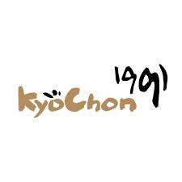
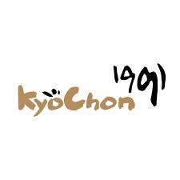
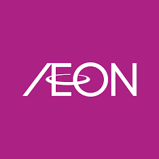
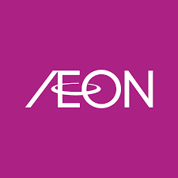
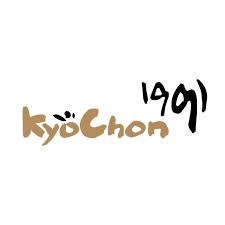
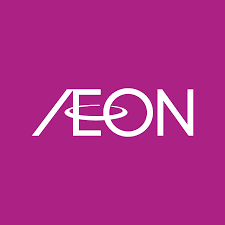

 

Here is my work experience starting from after I finish SPM & my school time.
There is a lot of things and skills that I gain from these work beside gain the life experience for me.
| Company | Position | Timeline |
|---|---|---|
| Pizza Hut Taman Tasik Prima | Service Crew & Bar Person | December 2019 - July 2020 |
| Kyochon IOI Puchong | Kitchen Crew | June 2022 - September 2022 |
| Aeon Big Puchong Utama | Store Associate | August 2023 - September 2023 |
| Aeon Mid Valley | Cashier | February 2024 - Mac 2024 |

